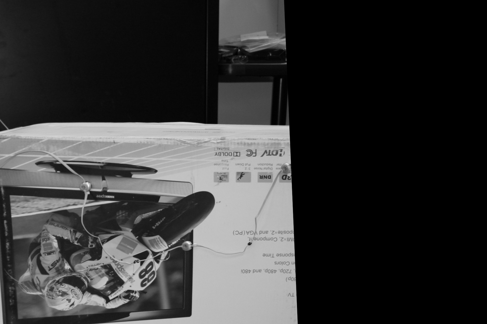
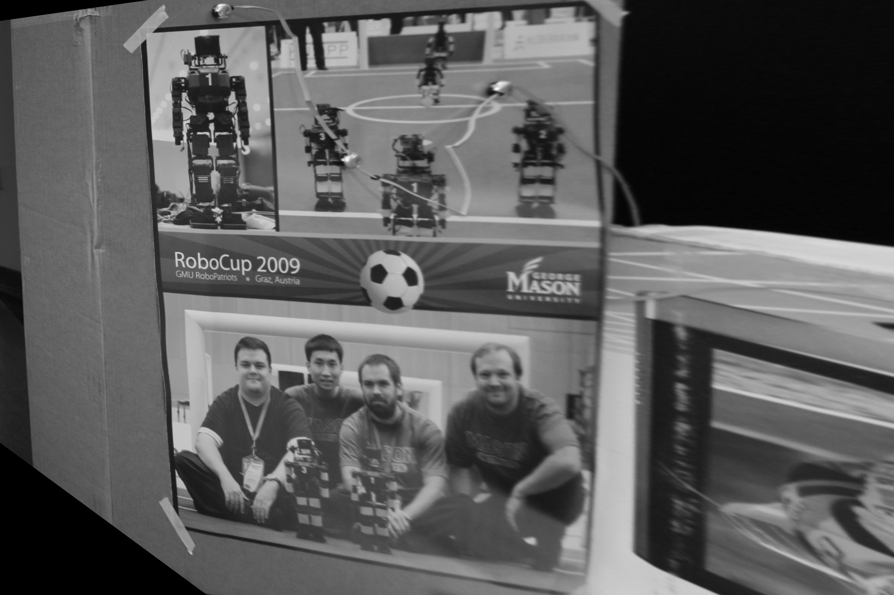

PART 1
I needed to use SURF for this part, finding the matches. I spent many hours trying to get this to work better with OpenCV 2.4.9 (which does not have cv2.drawMatches); however, 3.1.0 does not have SIFT or SURF. I used SIFT to find keypoints. Then the matcher used was Flann Matcher. This was very similar to homework 3.
Image pairs (query - train)
1194 – 1207
I chose this pair because the train was a very clear picture of the motorcycle box. The other one because it had the motorcycle on an angle. I actually chose 1195 sometimes. But this is my final one

1190 - 1202
I chose this pair for the opposite reason. The train is a clear image of the people, while the query is slanted.

PART 2
For this part I used cv2.findHomography(). I found code for this on OpenCV.org. I made this work so that it would take my drawMatches, then run cv2.findHomography. Its parameters are the points of the train image, the points of the query image and then the transformation computation method. I chose to RANSAC with a threshold of 5. Then I was able to get the homography matrix from the image pairs. It was saved as the return value of cv2.findHomography(). The matrices which I got for each of the image pairs is as follows:
1194 query image --- 1207 train image
[[ 7.91069528e+00 7.20581007e-01 -1.08773532e+04]
[ 2.40167972e-01 5.93355370e+00 -1.04978470e+03]
[ 1.52428007e-03 4.16039219e-04 1.00000000e+00]]
1190 query image --- 1202 train image
[[ 7.25831951e-01 1.21802370e-02 -1.93386905e+02]
[ -1.33818424e-01 5.83418901e-01 7.24908842e+01]
[ -6.96946679e-04 -2.99849602e-06 1.00000000e+00]]
PART 3
This is when I used my homography matrix from the Part 2 in order to warp the query image. For each of my image pairs, you can see above to see what would warp them to have the query image look more like the train image. For that I used cv2.warpPerspective(). In order for it to work I need to have the train image and the homography matrix. Then those 2 were used to warp the query image. Then I saved the file of the warped image.
1194 warped to 1207
I chose this pair because the train was a very clear picture of the motorcycle box. The other one because it had the motorcycle on an angle. I actually chose 1195 sometimes. But this is my final one
1190 warped to 1202
Sources:
http://docs.opencv.org/3.0-beta/doc/py_tutorials/py_feature2d/py_feature_homography/py_feature_homography.html http://stackoverflow.com/questions/20259025/module-object-has-no-attribute-drawmatches-opencv-python